Android APP抓包总结
常用的抓包工具
BurpSuite_pro
Fiddler 4
Charles-proxy
tcpdump和wireshark用来解决不是使用HTTP/HTTPS协议传输数据的app，通过tcpdump抓包，wireshark工具解析数据包。
常规抓包流程
1.首先我们需要让手机端与PC端处于同一网段（连上同一个wifi），
2.在PC查看主机IP地址通过cmd窗口运行ipconfig命令即可获取。
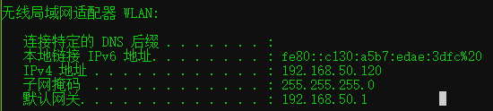
3.在手机端的wifi界面设置为手动代理，代理主机设置为PC端的IP，代理端口我们设置为8888（随便设置，只要和抓包工具一致）
4.然后打开抓包工具进行抓包。
5.通过手机浏览器访问以下网址，然后下载抓包工具证书，进行证书安装
BurpSuite_pro：http://burp
Charles-proxy：http://chls.pro/ssl
Fiddler：http://ipv4.fiddler:8888/
6.抓包效果图
BurpSuite_pro：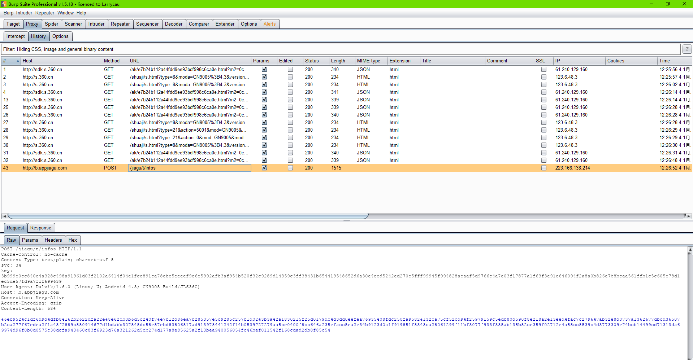
Fiddler：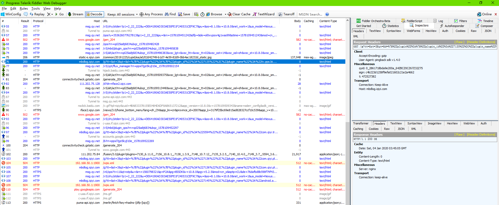
Charles-proxy：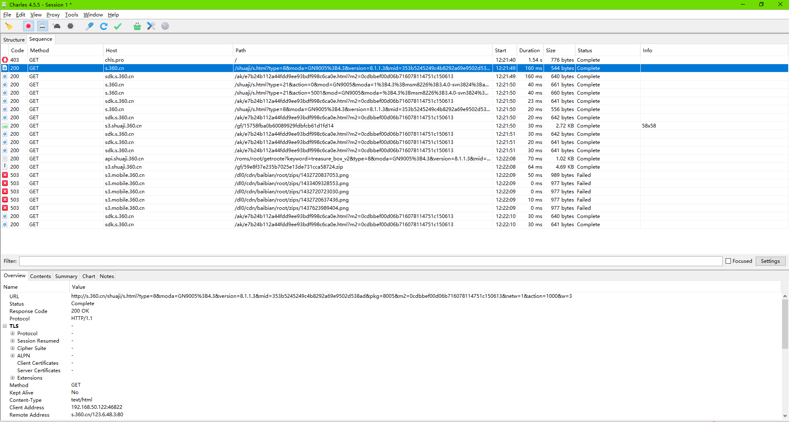
7.实际测试时，有些应用虽然能够抓包，但是应用端却显示访问错误的界面，应该是应用或服务器做了证书校验导致的。
（关闭了Xposed+JustTrustMe就能访问了）
遇到的问题
SSL pinning
SSL pinning就是通过在客户端对目标服务器的证书或公钥进行锁定，这样在客户端与服务器进行交互的时候，客户端就会验证服务器发来的CA证书或公钥，如果验证通过则有效，否则无效。
服务器双向验证
双向链接就是在基于SSLpinning的基础上，添加了服务端对客户端的验证。除了客户端会去验证服务端外，服务端还会去验证客户端是否有效。
如何分辨是否存在校验
存在校验如何分辨属于哪种校验
SSL pinning
如果抓不到包是不是就存在SLL pinning？ 因为如果客户端检测不通过那么也就不会发包了鸭，这样自然会显示失败的界面。
所以我们环境正常的情况下抓不到包，并且应用显示连不上网络，那么很多可能就是SLL pinning，这样我们需要先过掉这个检测再去抓包。
双向证书校验
双向证书验证时我们是能够抓到数据包的，只是服务器返回的状态码为400，原因是因为抓包工具没有发送有效的CA证书给服务器。
Bypass SSL pinning
1.利用Xposed+JustTrustMe绕过单向验证
2.通过Frida绕过SSL单向验证
这两种方法的原理都是对客户端的验证函数进行hook，从而达到绕过验证的目的。
Bypass 双向验证
因为客户端会验证服务端的证书，所以一般会把证书和证书秘钥存放在app中，我们找到服务器的CA证书并且导入到抓包工具中再进行抓包就行了
实例soul
下面我们利用soul来实际操作下，我们这里使用的抓包工具是Charles-proxy，别的工具思路是一样的，只是最后导入证书的方法不一样而已。
在没有绕过SSL pinning的情况下，我们会发现利用抓包工具无法对该应用的数据包进行抓取。猜测该应用可能使用了SSL pinning验证。
bypass SSL pinning
不管三七二十一，我们直接利用Xposed+JustTrustMe试一下绕过单向验证，验证下我们的猜测。
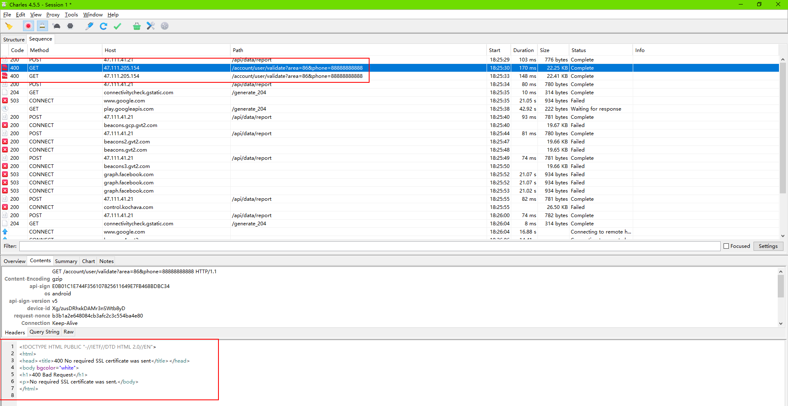
可以看到，由于我们开启JustTrustMe后就可以抓取到该应用的数据了，所以应该是绕过了SSL pinning，抓包结果如上图所示。
接着我们从服务器返回的信息以及返回的状态码为400可以确定，该服务端应该是开启了双向验证机制的。所以我们还需要去绕过服务端的双向验证机制。
双向代理绕过
在应用端查找服务器的CA证书
既然客户端会对服务端的证书进行验证，那么服务端的证书肯定在客户端会保留一份，那么我们能否直接在apk中找到呢。
在soul apk的assets目录下可以发现确实存在我们需要的证书。
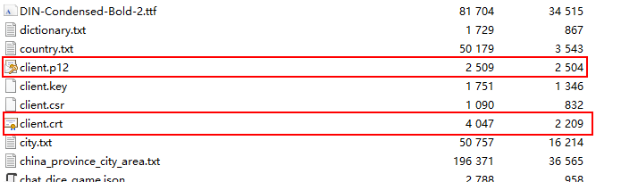
现在我们有了服务端的证书，但这还不够，因为使用该证书的时候会提示我们输入密码，我们还需要找到证书的密码，思路和刚才一样，在应用中找。
在应用端查找CA证书密码
把应用apk丢到jadx中解析，然后利用该工具的搜索功能直接搜索关键字”client.p12”，可以看到确实搜索到了。
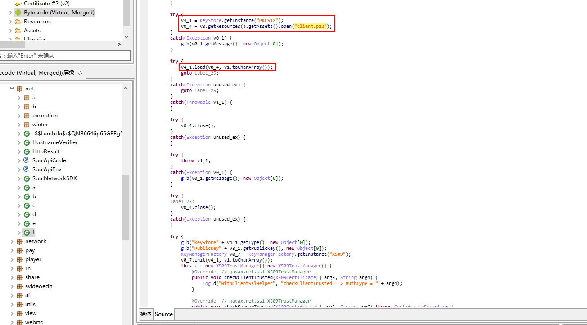
然后通过向上回溯分析代码，可以知道这段代码会调用到一个getStorePassword函数，该函数是一个jni函数，通过名字我们大概可以猜想到什么。
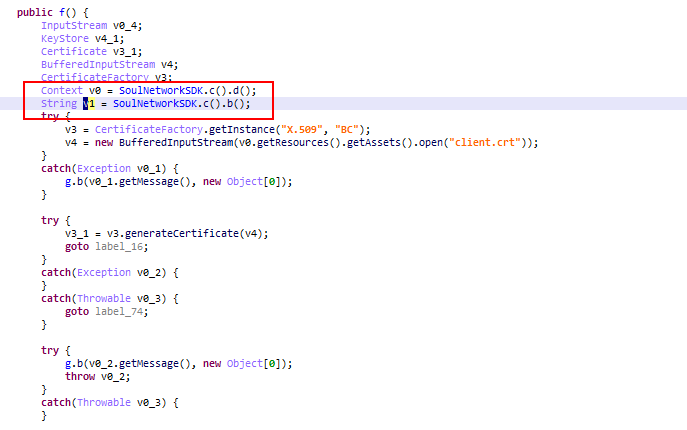
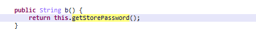
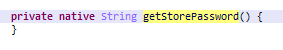
接着通过分析该函数所在的类可以知道该类会加载一个soul-netsdk动态库，那么我们就知道了getStorePassword的实现应该就在这个动态库中。
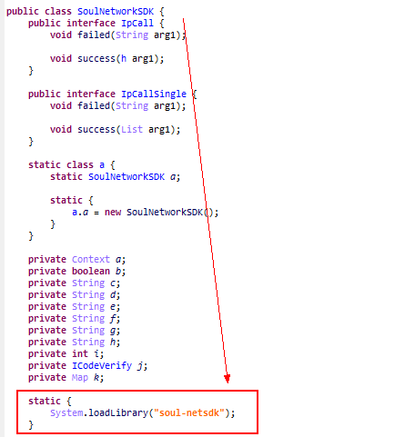
从apk中找到这个动态库并丢到IDA中解析可以找到下面这个函数，可以看到该函数直接返回了一个字符串，到此为止我们得到这个字符串就是该证书的密码”soulapp123!@#1”。
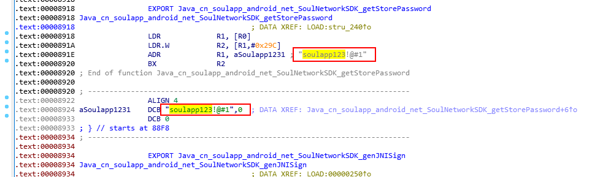
导入证书到抓包工具
最后我们需要把我们前面获取到的证书导入到抓包工具中，让工具使用我们提供的证书。通过以下的选项打开我们的导入窗口。
Proxy -> SSL Proxying Settings
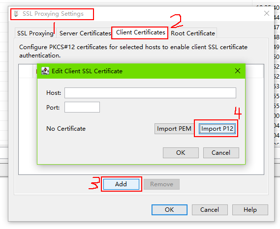
然后会弹出一个选项框，选中我们的证书，导入之后就是下面这样。
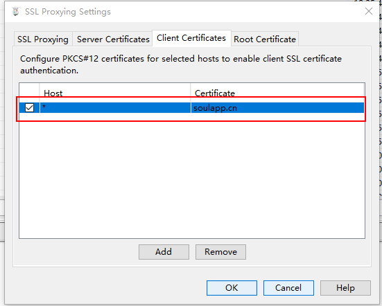
一切顺利之后点击OK，然后再次进行抓包。
进行抓包看下结果
可以看到我们成功抓到了数据包，并且也可以看到里面的内容。
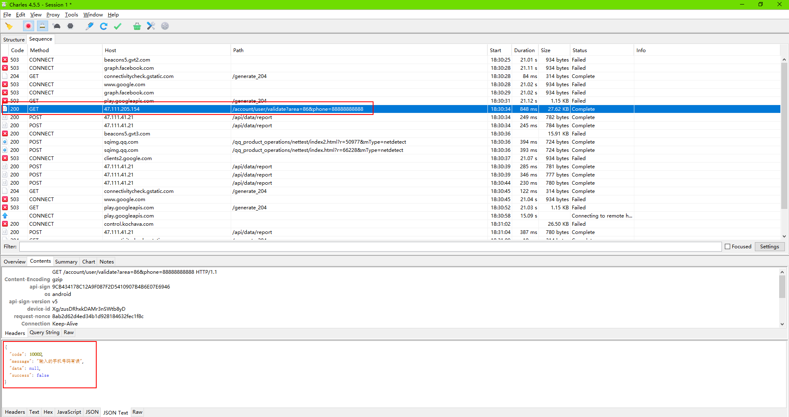
实例
用 JustTrustMe 干翻 SSL Pinning: 爬尤美 app 付费视频
记一次APP双向认证抓包
Frida 学习笔记-后面有几个例子不错
github相关工具
相关链接
扯一扯HTTPS单向认证，双向认证，抓包原理，反抓包策略
深入了解解析Https - 从了解到放弃
APP抓包——Xposed+JustTrustMe关闭SSL证书验证
Android抓包总结
安卓APP测试之HOOK大法-Frida篇
安卓APP测试之双向证书认证
使用OpenSSL（Windows x64版）将pem格式证书转换为p12格式
添加证书导入功能
以下三篇文章大同小异
使用Frida绕过Android SSL Re-Pinning
利用Frida绕过Certificate Pinning
使用Frida绕过Android App的SSL Pinning
Author: Let_go
Link: http://github.com/2020/01/04/Android-APP抓包总结/
Copyright: All articles in this blog are licensed under CC BY-NC-SA 3.0 unless stating additionally.